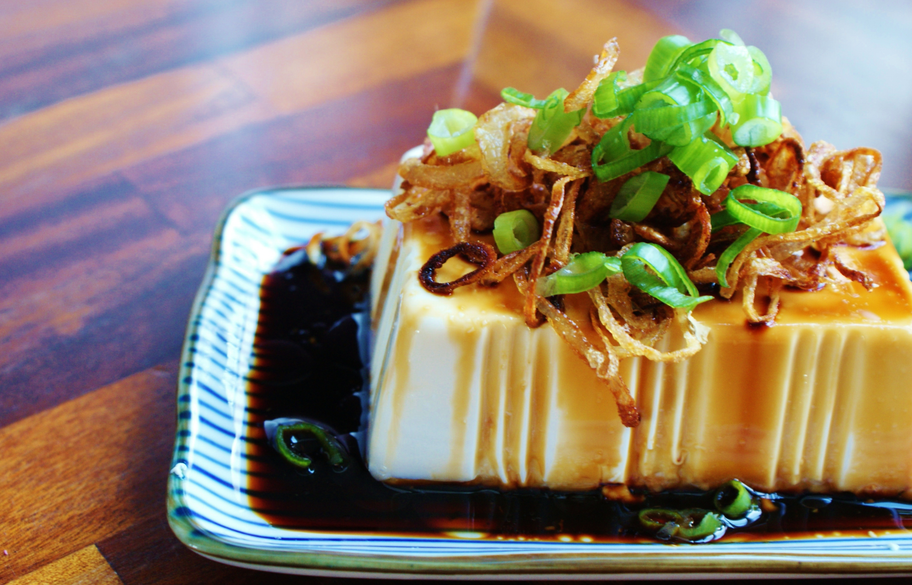

cold tofuuu

How to make cold tofu....
Basically, you want to get any not firm tofu and cut it up and eat it raw with the tofu sauce on it, plus spring onions
This is a perfect meal for a warm night
Ingredients
- tofu
- sesame oil
- some kind of chilli/hot sauce
- soy sauce
- spring onions
- sesame seeds
Steps
- cut the tofu into cubes
- mix sauce ingredients together
- add spring onions to the top
- add extra sesame seeds on top too